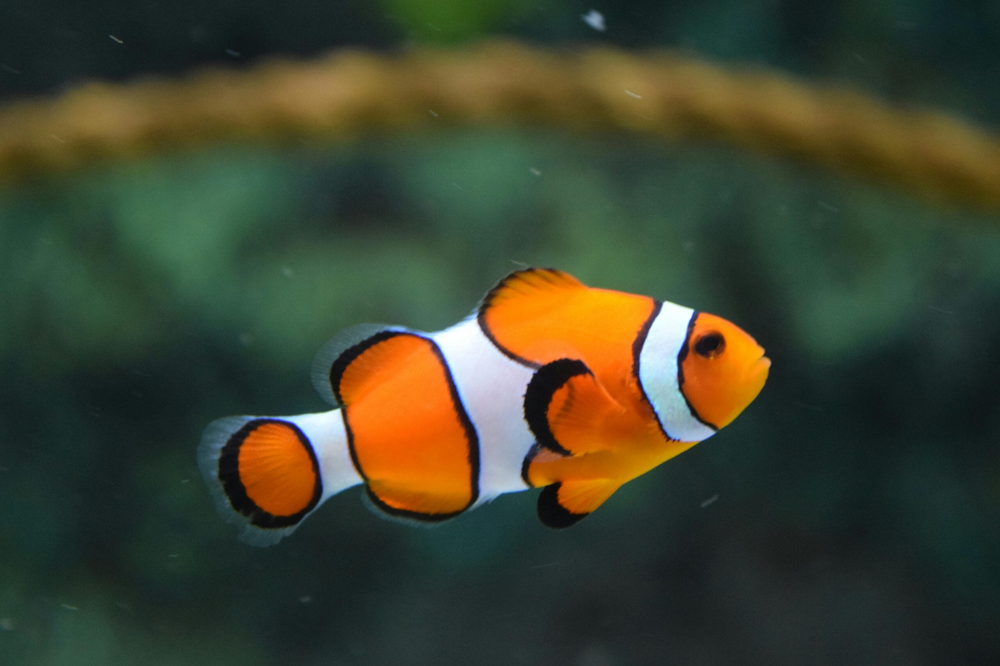

Appearance: Known as “Nemo” from Finding Nemo, the Paracanthurus hepatus boasts a vivid blue body, a black “palette” on its sides, with a vibrant yellow tail and dorsal fin. It grows up to 12 inches (30 cm), so it needs plenty of space. Indo-Pacific surgeonfish. Requirements: Aquarium: Minimum 75 gallons (300 liters) with ample swimming space. Water parameters: Temperature 75–82°F (24–28°C), salinity 1.020–1.025 sg, pH 8.1–8.4. Diet: Algae-rich diet (spirulina, nori) supplemented with frozen foods. Fun fact: Blue tangs are sensitive to water parameter changes and need stable conditions. Weekly 10% water changes are crucial for their health. Fun fact #2: Blue Tang’s cousin, Yellow Tangs, share a unique bond with coral reefs, helping to sustain a healthy reef ecosystem by feeding on algae. Intermediate aquarists with experience maintaining stable parameters in a large tank.